← Volver al inicio
Práctica 3/4: Análisis de Datos Regionales
1. Visualizaciones Generales (IA)
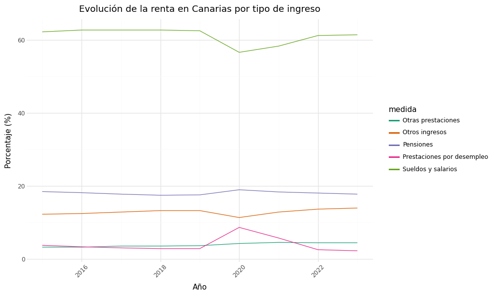
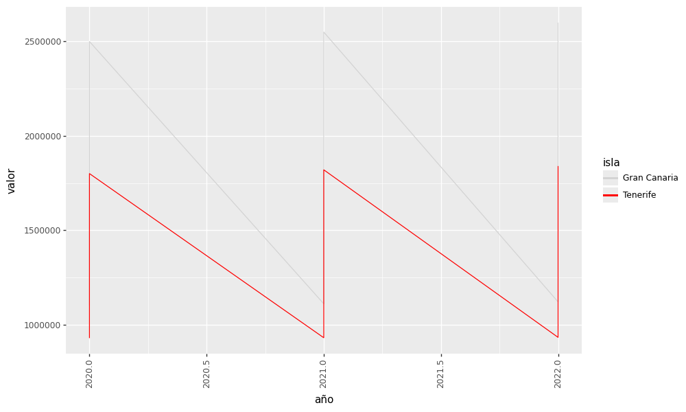
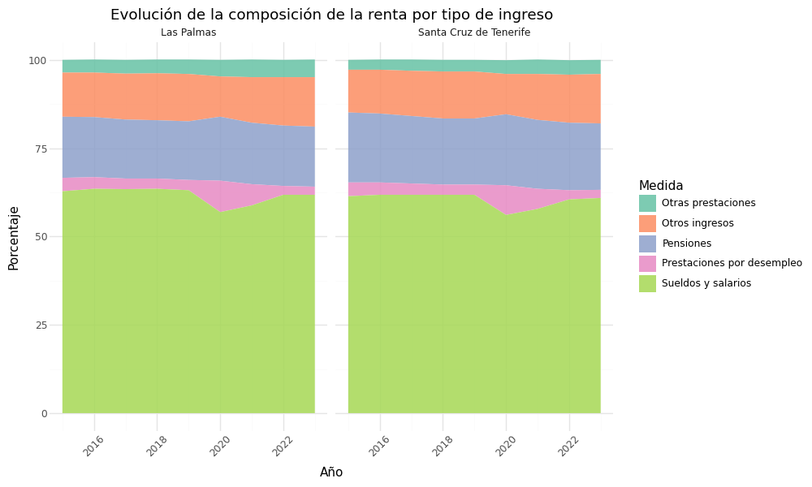
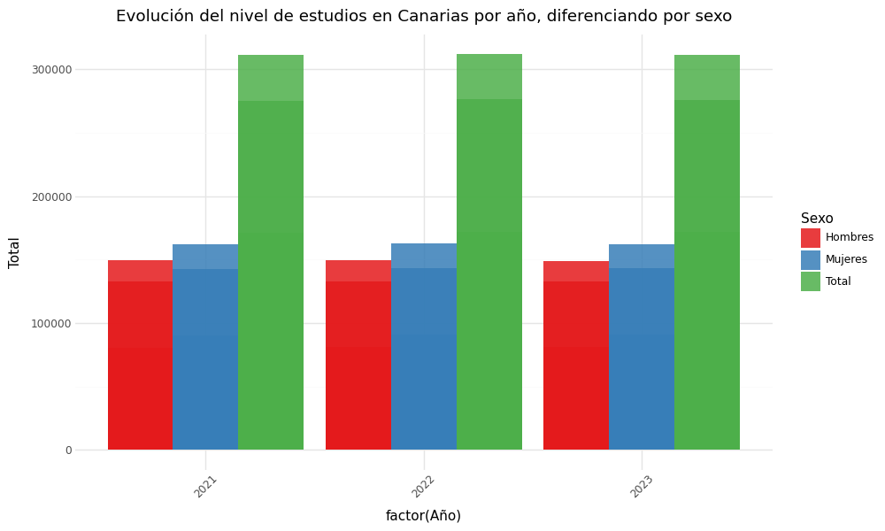
2. Evolución de la Renta
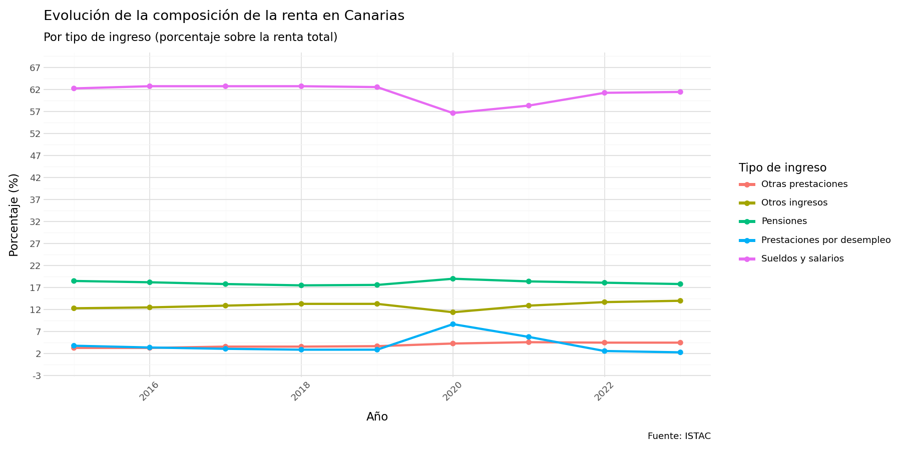
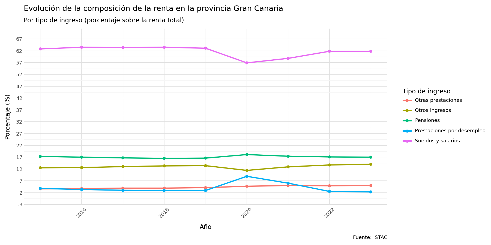
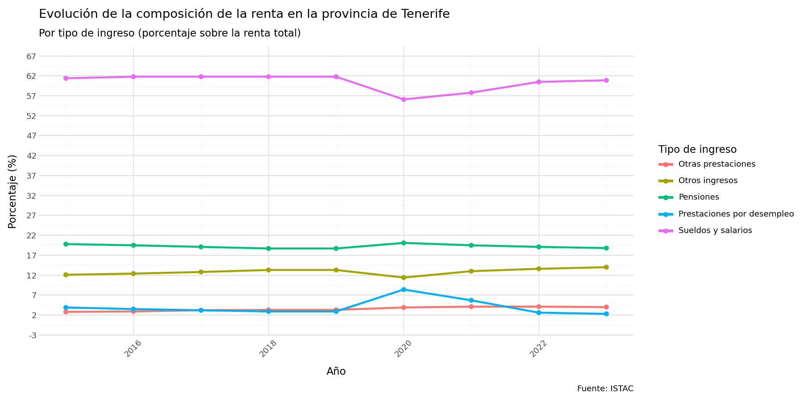
3. Composición de Renta (Áreas Apiladas)
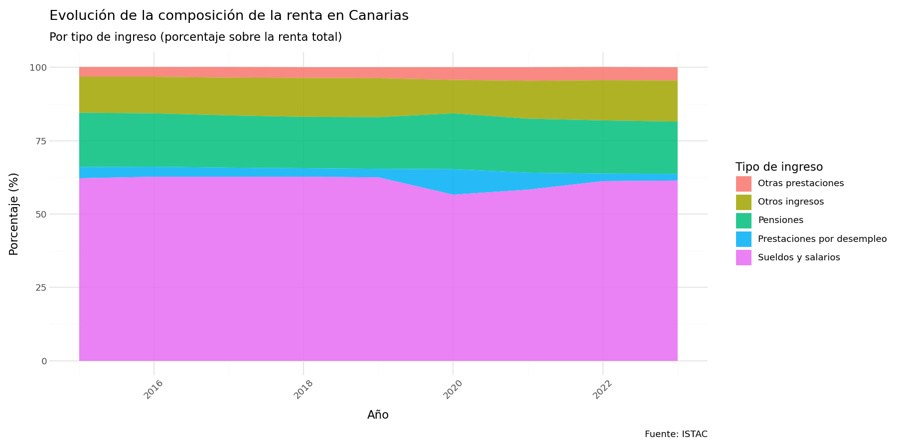
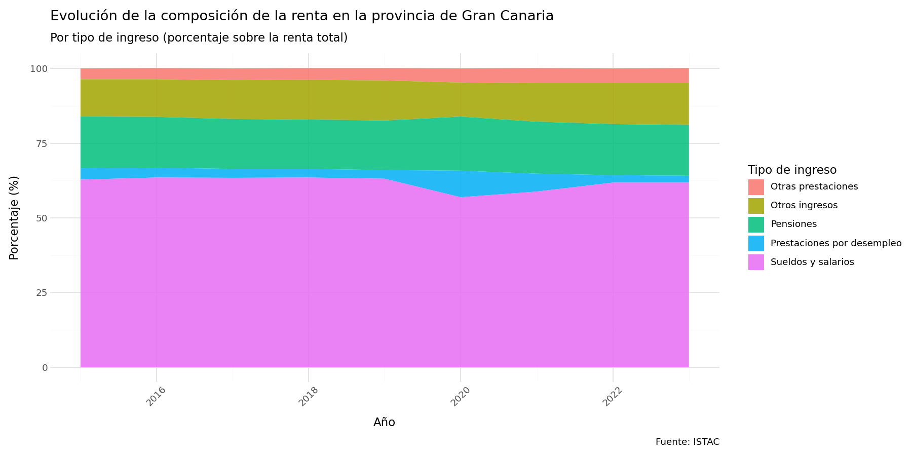
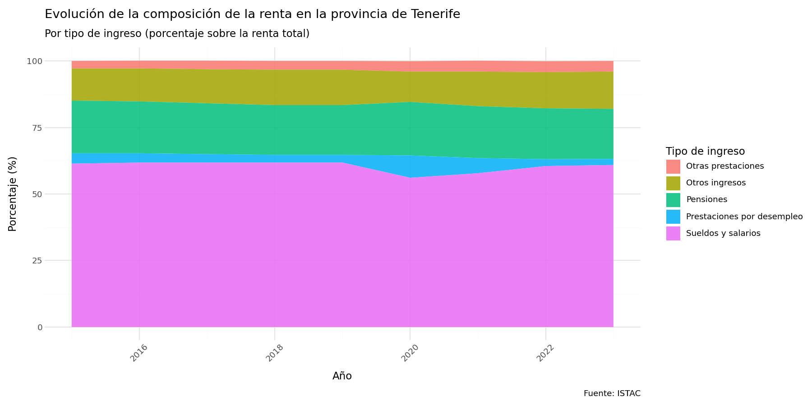
4. Mapas y Análisis Específico
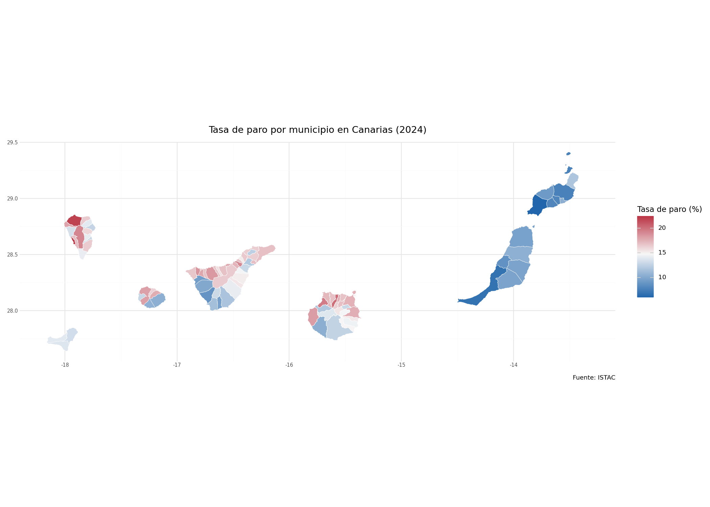
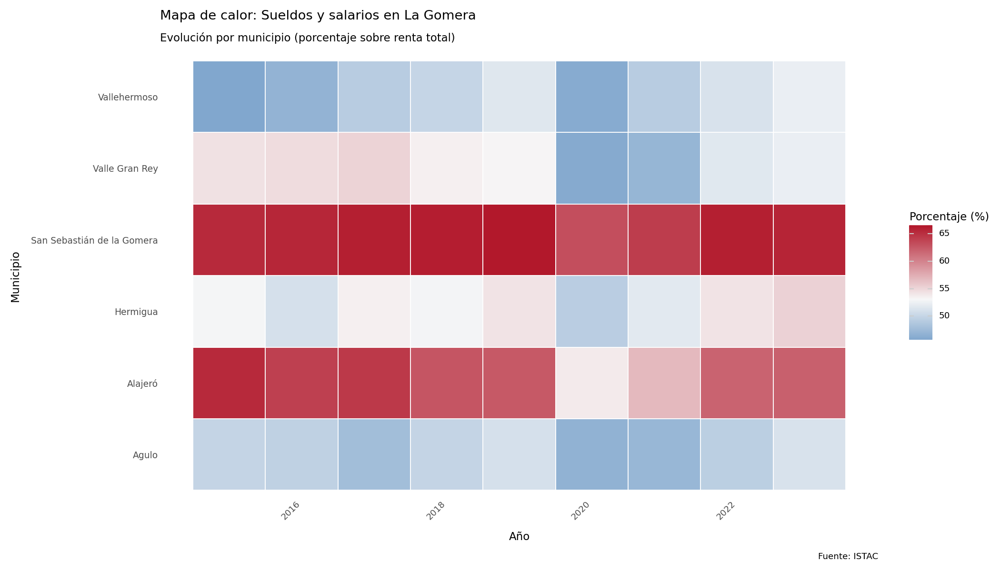
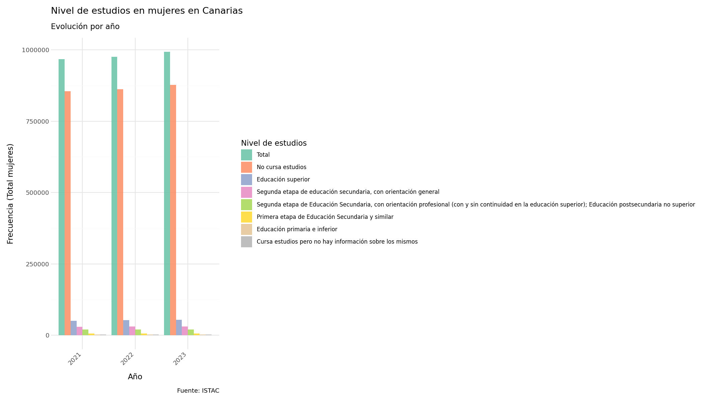